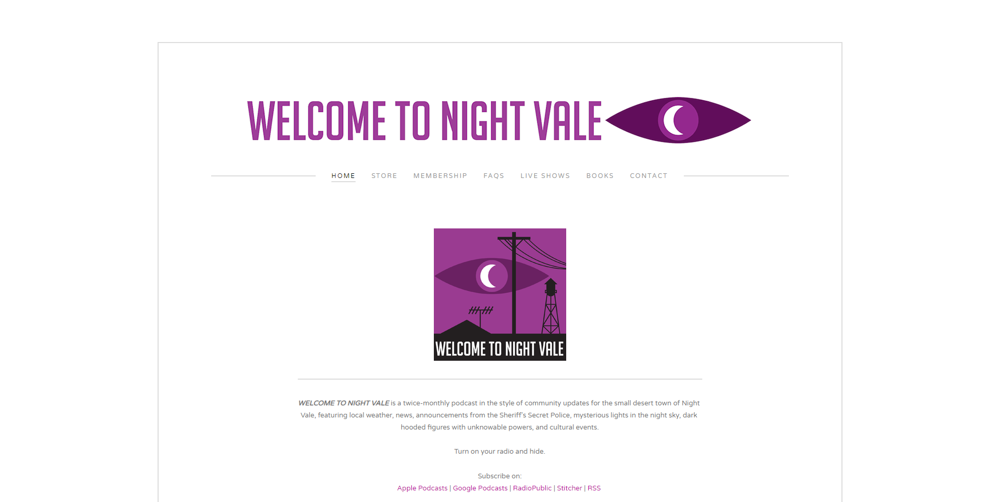
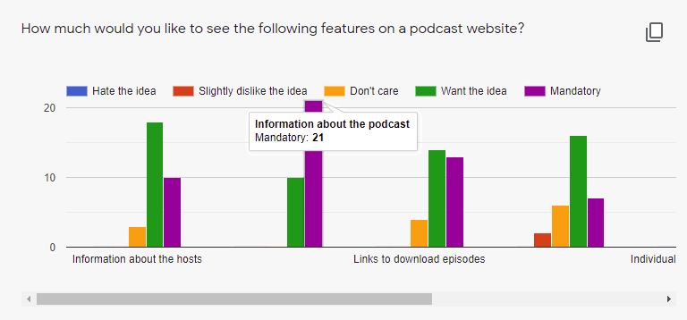
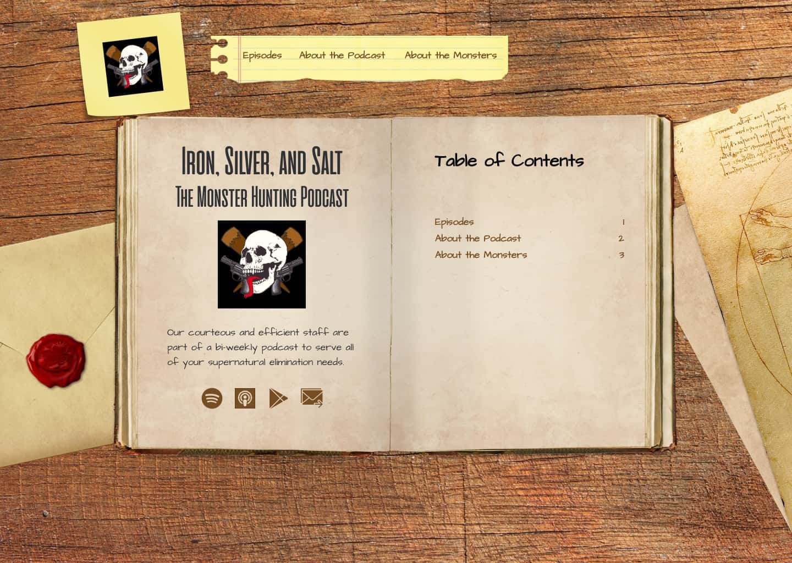

There are currently over 900,000 podcasts available for listeners around the world. One way podcasts have distinguished themselves from the competition is by giving listeners a webpage to visit. Iron, Silver, and Salt is one such podcast that needed a home, and I was excited to design one for them.
Iron, Silver, and Salt is a monster hunting podcast that wants to expand their listener base. One way the hosts were looking to do so was by creating a website to direct listeners to. They weren’t sure what they wanted to include on their site however, and tasked me with not only designing their site, but also determining what content should appear on it.
The Solution
The solution was a virtual desktop, monster hunting journal on center-stage. Information about the hosts, monsters, and individual episodes all give users a better idea what the podcast is about. The information is all supported by a clear, consistent brand that helps convey the monster-hunting theme.
Discovery
Competitive analysis
My first task was to analyze the competition. In the cloud storage space, Google Drive and Dropbox are the two biggest players, so I performed a SWOT analysis on these two. As the number one video hosting service, I also checked out YouTube. Each of these three had issues with their platform hower, that could allow for a site like Highlight to break into the market.
Information about the podcast is not the highest priority of the site.
Site does not offer a way to search episodes.
The most eye-catching feature is a link to a different podcast.
Finding specific information on the ‘About’ page is confusing.
Navigation links are not consistant throughout the site.
It takes a long time to find a specific episoide.

Episodes are not available on-site.
It is difficult to find where episodes are available.
There are no other projects mentioned to expand appeal.
The first step was discovering what users wanted to see when visiting a podcast’s website. Were potential listeners more interested in learning what others thought about the podcast, or learning more about the hosts? Did they want to listen to episodes on-site, or follow links to outside streaming sources? The answers came by putting out a survey, asking potential listeners directly what they wanted.

Once I had a better idea of the features users wanted to find in the site, I asked several people to participate in a card sort to help determine where users expected to find each feature.
Information Architecture
With the data gained from the survey, the SWOT analysis, and a few followup questions, I was able to create three user personas. These helped me to stay focused on the users’ wants throughout the design process.
Krieg B, age 32
Motivations:
Krieg is always looking for new elements to incorporate into his DnD campaign, and loves learning about new monsters. His studies have to take priority however, and he needs to discern good resources from useless ones quickly.
Goals:
Quickly determine if new information can be gained from the podcast.
Download episodes to listen to during commute.
Find information about specific episodes.
Frustrations:
No detailed episode information on spotify/itunes.
No way to access reference material for episodes.
Wants episode sparknotes to reference later without having to relisten to entire episodes.
Anegla W, age 38
Motivations:
Angela enjoys listening to a variety of different topics, and is always looking for another podcast to help distract from one more commute. Since she listens to such a variety of podcasts, she feels a connection to them, and is looking to give back to the people providing her hours of entertainment.
Goals:
Learn where she can listen to and download a given podcast.
Find the episode release schedule.
Contact the hosts with both tips and encouragement.
Frustrations:
Not all podcasts are available on the podcast services she already uses.
It can be difficult to find out when to expect a new episode from a given podcast.
Learning about the hosts frequently requires listening to a ton of episodes.
Chris V, age 27
Motivations:
Chris is one of the hosts of the Iron, Silver, and Salt podcast. He is looking to expand the listener base, but has nowhere concrete to point them to. Furthermore, he wants to have the ability to interact with his listeners, collect feedback, and ultimately improve the podcast.
Goals:
Attract new listeners.
Interact with listeners to collect feedback on individual episodes.
Provide details beyond the episode title.
Frustrations:
No central location to direct new listeners to.
No way to showcase supplementary work (art, music, etc.).
No way to include reference material, supplementary information best conveyed through a non-vocal medium.
User stories
Information in hand, I created several user stories, ranking them based off of the data gained from earlier research. I also took input from Iron, Silver, and Salt into consideration, giving a little more weight to the features they wanted included in their site. This prioritization really helped me focus on the most important tasks- doubly important due to the very compressed timeline of this project.
With the user flows and card sort helping define the pages that would make up Iron, Silver, and Salt’s site, it was time to sketch out the wireframes. I sketched out several concepts, asking the hosts which idea they preferred. With their input, I sketched out the rest of the site, taking their continued feedback into consideration.
While working on the wireframes, I also worked with Iron, Silver, and Salt to create a style guide to flesh out their young brand. They provided me with a logo they had already had made, and a font that came with it.
From that, I selected a complimentary font to accompany their brand font, determined an appropriate color palette, and fleshed out a style guide for them.
Once everybody was happy with the wireframes and style guide, I combined the two into a hi-fi mockup. As I worked on each screen, I reached out to the hosts and senior designers for feedback, tweaking each design so that the final result would leave each stakeholder pleased.

User testing
The last step was to test the final prototype with potential users. Each testee was asked to do four tasks:
Find more information about werewolves.
Find and listen to the werewolf episode.
Find more information about the hosts.
Find where else the podcast is available.
After reviewing the results, a few key issues with the design became apparent.
Problem: Users had trouble finding the social media links.
Solution: Move links from below the main content up into the hero.
Problem: Users weren't sure what the search bar was for.
Solution: Remove the search bar from the hero, and move it into the episode listing with pre-populated text clarifying its usage.
Problem: Users were having trouble finding specific monsters using the map.
Solution: Add a search bar to the map to give users another way to find specific monsters.
Conclusion
Iron, Silver, and Salt was a very fun site to design. This opportunity taught me a lot about balancing the needs of a client with the needs of your superiors, while still keeping the focus of the designs on the users. Getting and incorporating feedback is always an important process of creating something new, but growing the ability to balance feedback from different stakeholders is an essential piece of that.
Moving forward, as the podcast grows, I would like to add pages to the site- a merch store if they create some, or pages dedicated to any books or videos they create. Creating additional monster info cards, and episode pages would be a good addition as well, if there were more time.